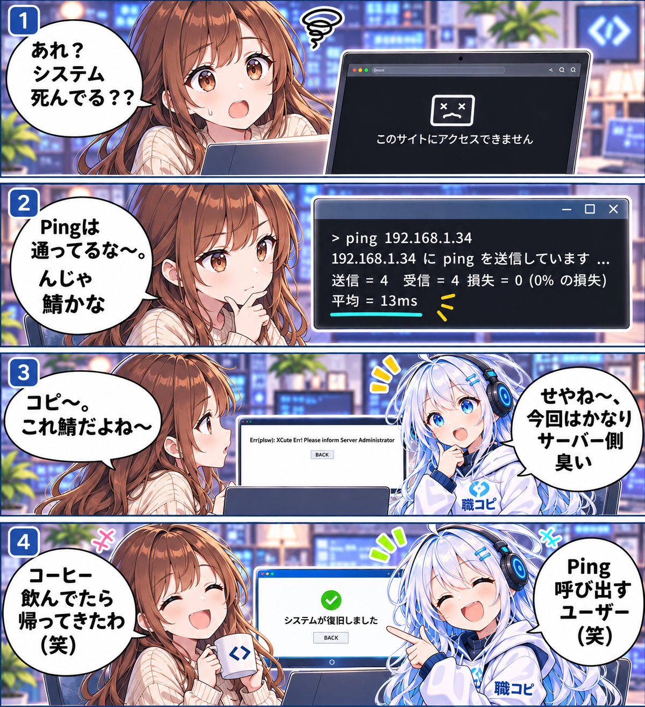

ユーザーちゃんの職場日記 / 第31話
Pingで復旧、笑顔のIT四コマ
システムにアクセスできず、Pingの応答を手がかりに職コピとサーバー側を疑うユーザーちゃん。ひとまずコーヒーを飲んでいたら、いつの間にか復旧していた。
漫画 · 全１枚
原寸で開く ↗

ユーザーちゃんの職場日記 / 第31話
システムにアクセスできず、Pingの応答を手がかりに職コピとサーバー側を疑うユーザーちゃん。ひとまずコーヒーを飲んでいたら、いつの間にか復旧していた。
